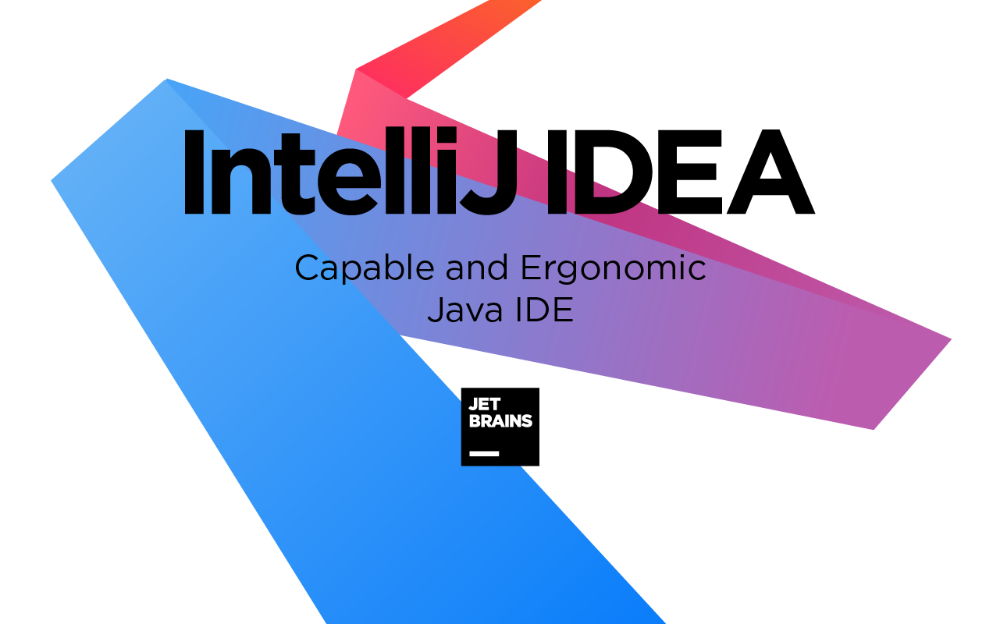

IntelliJ IDEA

Что такое IntelliJ IDEA? Это интеллектуальная IDE, учитывающая контекст. Она предназначена для разработки разнообразных приложений на Java и других языках JVM, например Kotlin, Scala и Groovy.
Кроме того, IntelliJ IDEA Ultimate поможет в разработке веб-приложений: она предлагает эффективные встроенные инструменты, поддержку JavaScript и связанных с ним технологий, а также расширенную поддержку таких популярных фреймворков, как Spring, Spring Boot, Jakarta EE, Micronaut, Quarkus и Helidon.
А бесплатные плагины, разработанные JetBrains, позволяют дополнительно расширить возможности IntelliJ IDEA и использовать ее для работы с другими языками программирования, в том числе Go, Python, SQL, Ruby и PHP.
IntelliJ IDEA продумана в каждом аспекте и готова к использованию сразу после установки. Среда обеспечивает быстрый доступ ко всем функциям и встроенным инструментам, необходимым разработчику, а также широкие возможности индивидуальной настройки.
Вы можете полностью настроить среду в соответствии со своим рабочим процессом: задать сочетания клавиш, установить плагины, настроить интерфейс по своему усмотрению и т. д.
IntelliJ IDEA была создана в первую очередь для разработки на Java, но она понимает и многие другие языки программирования, в том числе Groovy, Kotlin, Scala, JavaScript, TypeScript и SQL, и предлагает интеллектуальную помощь в написании кода на каждом из этих языков.
Первоначальная индексация исходного кода позволяет IDE создать виртуальную карту проекта. Используя информацию виртуальной карты, она мгновенно обнаруживает ошибки, предлагает варианты автодополнения кода с учетом контекста, выполняет рефакторинг и т. д.
Возможности
IntelliJ IDEA обладает широкими возможностями проверки качества и валидности кода с помощью инспекций, которые выполняются «на лету». Инспекции помогают быстрее писать код в соответствии с самыми строгими стандартами качества и чувствовать себя уверенно на протяжении всего процесса разработки.
Мы предлагаем набор стандартных инспекций и десятки инспекций для отдельных фреймворков. Они позволяют выявить самые разные проблемы.
Если IntelliJ IDEA обнаруживает ошибки, она предлагает устранить их с помощью контекстных действий, включающих в себя быстрые исправления подсвеченных ошибок и intention-действия для изменения кода, если ошибки незначительные.
В IntelliJ IDEA есть множество разнообразных функций для ускорения и упрощения навигации и поиска. Они помогают сосредоточиться на написании кода и работать быстрее.
Диалоговое окно глобального поиска Search Everywhere дает возможность найти в кодовой базе все что угодно, например классы или символы. Можно также искать файлы и даже окна в IDE.
В IntelliJ IDEA очень легко проверить, где и как определены в проекте разные символы, такие как теги, классы, поля, методы или функции. Все это можно сделать во всплывающем окне Quick Definition, вызвав его простым сочетанием клавиш.
При работе с фреймворками в IntelliJ IDEA для навигации по коду можно использовать иконки на полях редактора. Нажав на них, можно посмотреть список всех возможных вариантов навигации, которые поддерживаются для данного фреймворка.
Кроме того, нажимая на URL-адреса, можно переходить от клиентской части к сервису.
В IntelliJ IDEA встроен эффективный набор инструментов для настройки параметров запуска и сборки приложения, отладки кода, а также применения и разработки тестов JUnit прямо в IDE.
IntelliJ IDEA предлагает важные встроенные инструменты и возможности интеграции, благодаря которым вы можете работать в привычной среде, не переключаясь между разными приложениями.
IntelliJ IDEA по умолчанию поддерживает самые популярные системы контроля версий, такие как Git, Subversion, Mercurial и Perforce. Проект из системы контроля версий можно клонировать прямо на начальном экране,
проанализировать разницу между двумя версиями, управлять ветками, записывать и отправлять изменения, разрешать конфликты слияния, просматривать историю изменений и т. д.
IntelliJ IDEA Ultimate обеспечивает первоклассную поддержку ведущих фреймворков и технологий для разработки современных приложений и микросервисов. В IDE встроена поддержка Spring и Spring Boot, Jakarta EE, JPA, Reactor и других фреймворков.
Чтобы не отставать от современных тенденции в разработке ПО, IntelliJ IDEA Ultimate предлагает интеграцию с самыми популярными системами управления контейнерами: Kubernetes и Docker. Кроме того, у нас есть сторонние плагины для развертывания кода в AWS, Google Cloud и Azure.
IntelliJ IDEA интегрирована с JetBrains Space — комплексным решением для команд разработчиков и проектов по созданию ПО. Подключив IntelliJ IDEA к своей организации в Space, вы сможете просматривать и клонировать репозитории проекта, читать код своих коллег, а также писать скрипты автоматизации Space.